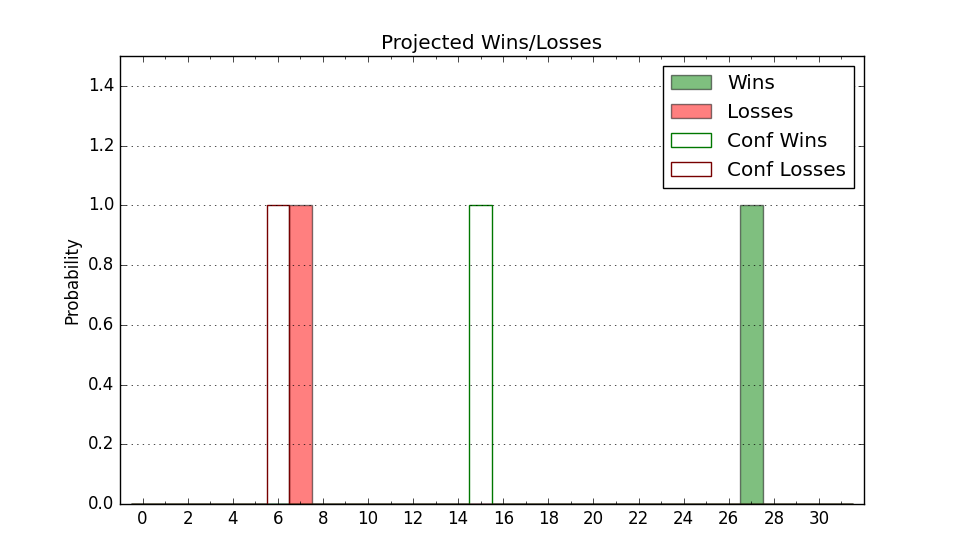

| Home | Game Probabilities | Conferences | Preseason Predictions | Odds Charts | NCAA Tournament |
| City: | East Lansing, Michigan | |
| Conference: | Big Ten (4th)
| |
| Record: | 11-8 (Conf) 21-13 (Overall) | |
| Ratings: | Comp.: 19.1 (29th) Net: 19.1 (29th) Off: 113.3 (29th) Def: 94.2 (40th) SoR: 83.4 (23rd) |
| Remaining | ||||||
|---|---|---|---|---|---|---|
| Date | Opponent | Win Prob | Pred. | |||
| Previous | Game Score | |||||
| Date | Opponent | Win Prob | Result | Off | Def | Net |
| 11/7 | Northern Arizona (225) | 95.2% | W 73-55 | -14.5 | 13.5 | -0.9 |
| 11/11 | (N) Gonzaga (7) | 29.6% | L 63-64 | -21.1 | 28.9 | 7.8 |
| 11/15 | (N) Kentucky (30) | 50.1% | W 86-77 | -7.4 | 16.3 | 8.9 |
| 11/18 | Villanova (49) | 72.5% | W 73-71 | 4.2 | -11.3 | -7.2 |
| 11/24 | (N) Alabama (2) | 23.7% | L 70-81 | -1.7 | -3.4 | -5.2 |
| 11/26 | (N) Oregon (39) | 53.8% | W 74-70 | 12.1 | -2.0 | 10.2 |
| 11/27 | @Portland (127) | 70.5% | W 78-77 | 11.8 | -16.3 | -4.5 |
| 11/30 | @Notre Dame (168) | 77.7% | L 52-70 | -29.4 | -14.6 | -43.9 |
| 12/4 | Northwestern (31) | 65.0% | L 63-70 | -9.8 | -9.6 | -19.4 |
| 12/7 | @Penn St. (37) | 37.6% | W 67-58 | -8.9 | 24.7 | 15.8 |
| 12/10 | Brown (170) | 92.3% | W 68-50 | -3.8 | 4.4 | 0.6 |
| 12/21 | Oakland (271) | 96.9% | W 67-54 | -20.1 | 7.8 | -12.3 |
| 12/30 | Buffalo (204) | 94.3% | W 89-68 | 1.1 | -1.4 | -0.2 |
| 1/3 | Nebraska (87) | 82.4% | W 74-56 | 3.8 | 8.2 | 12.0 |
| 1/7 | Michigan (43) | 69.4% | W 59-53 | -18.9 | 22.5 | 3.6 |
| 1/10 | @Wisconsin (68) | 48.4% | W 69-65 | 12.3 | -6.8 | 5.5 |
| 1/13 | @Illinois (28) | 35.1% | L 66-75 | -1.1 | -10.8 | -11.8 |
| 1/16 | Purdue (6) | 43.4% | L 63-64 | -0.0 | 1.9 | 1.9 |
| 1/19 | Rutgers (41) | 68.6% | W 70-57 | 13.5 | 7.6 | 21.1 |
| 1/22 | @Indiana (32) | 35.5% | L 69-82 | 0.5 | -17.0 | -16.5 |
| 1/26 | Iowa (36) | 66.8% | W 63-61 | -18.6 | 15.2 | -3.4 |
| 1/29 | @Purdue (6) | 18.4% | L 61-77 | -7.1 | -5.9 | -13.0 |
| 2/4 | @Rutgers (41) | 39.1% | L 55-61 | -10.5 | 6.9 | -3.6 |
| 2/7 | Maryland (23) | 62.3% | W 63-58 | -7.7 | 7.8 | 0.1 |
| 2/12 | @Ohio St. (34) | 36.5% | W 62-41 | 1.7 | 39.2 | 40.9 |
| 2/18 | @Michigan (43) | 40.0% | L 72-84 | 7.6 | -26.3 | -18.6 |
| 2/21 | Indiana (32) | 65.2% | W 80-65 | 18.1 | 4.9 | 23.0 |
| 2/25 | @Iowa (36) | 37.1% | L 106-112 | 22.2 | -25.8 | -3.6 |
| 2/28 | @Nebraska (87) | 57.8% | W 80-67 | 14.8 | -1.1 | 13.7 |
| 3/4 | Ohio St. (34) | 66.2% | W 84-78 | 19.0 | -17.5 | 1.5 |
| 3/10 | (N) Ohio St. (34) | 51.4% | L 58-68 | -12.3 | -9.7 | -22.1 |
| 3/17 | (N) USC (47) | 57.8% | W 72-62 | 6.9 | 6.3 | 13.2 |
| 3/19 | (N) Marquette (15) | 43.7% | W 69-60 | 1.6 | 19.2 | 20.8 |
| 3/23 | (N) Kansas St. (22) | 47.2% | L 93-98 | 18.5 | -28.4 | -9.9 |
| Stats & Trends | |||||
|---|---|---|---|---|---|
| Current | Day | Week | Month | Season | |
| Composite | 19.1 | +0.0 | +0.3 | +0.8 | +4.2 |
| Comp Rank | 29 | -2 | +2 | +6 | +16 |
| Net Efficiency | 19.1 | +0.0 | +0.3 | +0.8 | -- |
| Net Rank | 29 | -2 | +2 | +6 | -- |
| Off Efficiency | 113.3 | +0.0 | +0.8 | +3.3 | -- |
| Off Rank | 29 | -- | +13 | +33 | -- |
| Def Efficiency | 94.2 | -0.0 | -0.5 | -2.4 | -- |
| Def Rank | 40 | -- | -3 | -13 | -- |
| SoS Rank | 1 | -- | -- | +1 | -- |
| Exp. Wins | 21.0 | -- | +1.0 | +2.4 | +5.5 |
| Exp. Conf Wins | 11.0 | -- | -- | +0.4 | +1.7 |
| Conf Champ Prob | 0.0 | -- | -- | -- | -4.2 |

| Advanced Stats | ||
|---|---|---|
| Stat | Value | Rank |
| Off Eff FG % | 0.553 | 31 |
| Off Ast Ratio | 0.177 | 24 |
| Off ORB% | 0.281 | 143 |
| Off TO Rate | 0.137 | 50 |
| Off FT Ratio | 0.329 | 137 |
| Def Eff FG % | 0.453 | 33 |
| Def Ast Ratio | 0.134 | 110 |
| Def ORB% | 0.218 | 25 |
| Def TO Rate | 0.145 | 248 |
| Def FT Ratio | 0.258 | 48 |